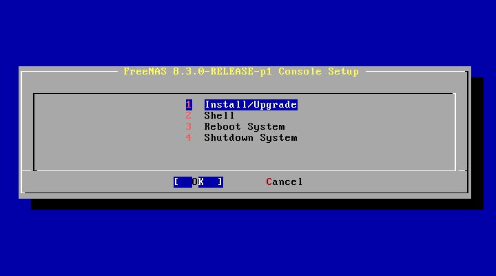
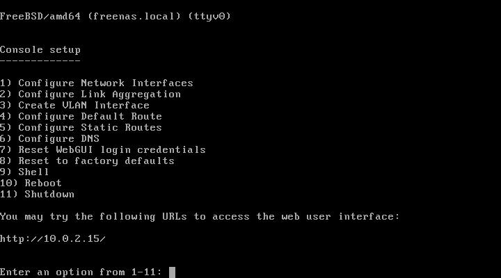
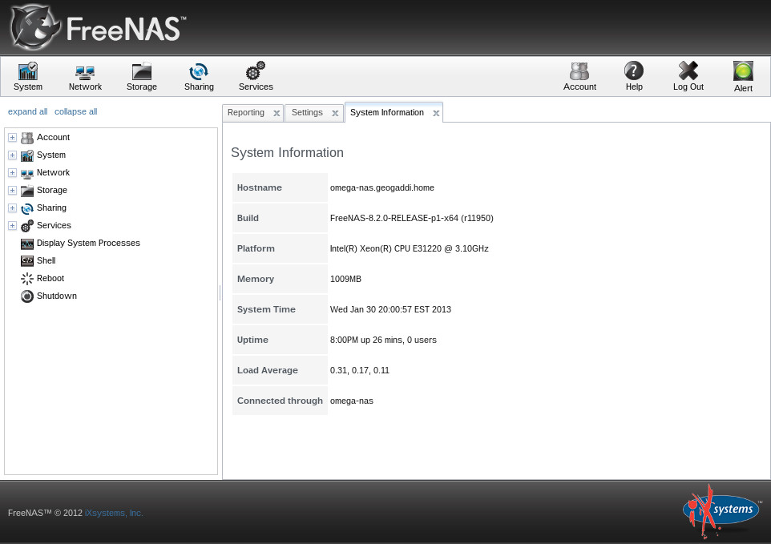
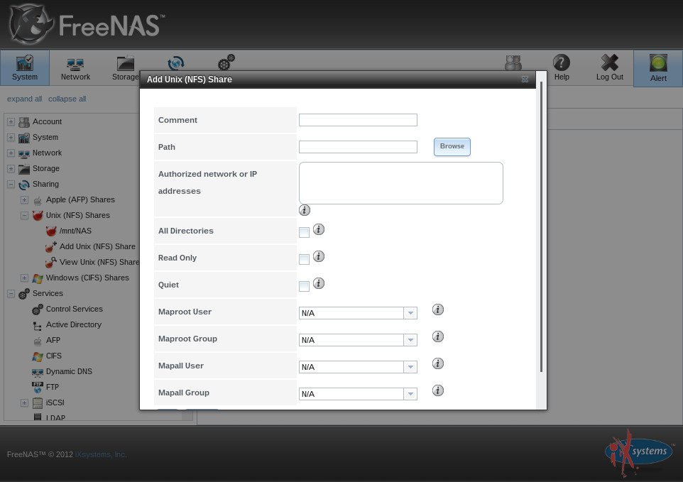

FreeNAS is a version of the BSD operating system that includes built-in and dedicated tools for operating file storage and media services. It is an excellent choice for those who wish to maximize their ability to oversee and control their media server, and retain a very easy-to-use and easy-to-setup interface.
FreeNAS is not just server software, like most other tools explained in this guide. It is a separate operating system. As such, it is designed to run on a dedicated NAS (network-attached storage) system or virtual machine. A NAS is used primarily to store a large amount of files or media at once, and to host high-capacity hard drives for this.
Oftentimes it is better to run your server under FreeNAS (or run a virtual machine with it) if you are planning on providing a decent amount of filesharing or media streaming services. It is also a good option if you will be using one server, but want to include sufficient controls over your media services and only will be running them on an internal network. By running FreeNAS on a virtual machine separate from your other web server software, you can ensure that external sources will not have the same access to this machine as your web server.
FreeNAS is installed much like any other Linux-like operating system. Download the full version ISO image from the front page of the FreeNAS website, depending on your architecture. After it is downloaded, you can then burn it to a disc and boot your server from it to begin the installation process. If you want to run FreeNAS in a virtual machine, you can start your ISO with VirtualBox directly to install (check out chapter 3.12 for more information on virtual machines).

Once you boot from the CD/image, you are greeted with the lovely text-based installer. The instructions here will walk you through choosing the right disk partition. Installing FreeNAS is super easy, it's nearly a one-click installation. Once it is fully installed, it will let you know that it can reboot.
After the reboot, you are sent to its main menu.

Note that if your network assigns IP addresses via DHCP, you will need to designate a static IP address for your FreeNAS implementation. You can read more about how to do this in chapter 3.6.
Otherwise, your FreeNAS distribution is running as long as it is at this screen.
To begin setting up your fileshares and continue the configuration, fire up your web browser of choice and navigate to the URL that was listed on the screen. This will take you to the FreeNAS WebGUI.

After you log in, this is the first screen you are greeted with, showing your basic system information. Menu options are listed along the left side and on the upper menu bar. You can customize various details about your admin account and set up users to connect to your NAS under the "Account" submenu. Under "System" you can configure your FreeNAS' details like time zone, email used for notifications, and other things. The "Network" submenu will allow you to make any changes to your network connection and interfaces that you didn't make in the text-based menu earlier.
The next option, "Storage," will allow you to set up hard drive space to store the files and media that you want to serve with FreeNAS. To begin, click Storage > Volumes.
Once your volume is set up, you are free to set up the sharing services you want to run on your FreeNAS server.
FreeNAS supports a wide range of services to extend your server's use. We will begin with setting up two basic services: NFS file shares for Linux-based computers, and CIFS/Samba file shares for Windows-based computers. Note that you can also use Samba file sharing on Apple-based hardware, and it is much better than Apple's proprietary AFP service.
To set up NFS file shares on your FreeNAS box, click Sharing > Unix (NFS) Shares, then click Add Unix (NFS) Share.

To activate your newly-created share, click Services > Control Services, then toggle the On switch next to NFS. To connect to your NFS share on a Linux-based computer, run the following command with the appropriate values. Remember that you must set up a local folder to act as the placeholder when it is mounted.
sudo mount $ip-address:/path/to/mount /path/to/local/folder
To set up CIFS file shares on your FreeNAS box, click Sharing > Windows (CIFS) Shares, then click Add Windows (CIFS) Share.
To activate your newly-created share, click Services > Control Services, then toggle the On switch next to CIFS.
To view the share on your Windows computer, go to My Computer, then type your computer's address like so: \$ip-address/$mount-name. Or, you can mount the share like a drive by right-clicking "My Computer" and choosing "Map Network Drive."
To view the share on your Mac computer, open Finder. You should see the share show up in the left-hand side of your finder. If not, go to the menu and click Go > Connect to Server. Type smb://$ip-address/$mount-name then click OK.
Here is a quick rundown of other services you might find useful on your FreeNAS implementation.